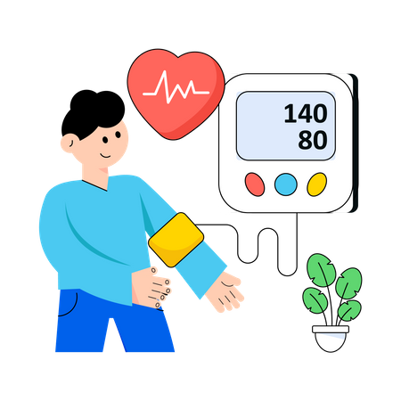

Classificação de Risco
Conheça os níveis de urgência e organize suas informações para o atendimento.

Não aguarde o atendimento virtual. Ligue para o SAMU 192.
Prioridades de atendimento
A classificação de risco organiza o atendimento de acordo com a gravidade de cada caso.
-
Prioridade máxima
Vermelho
Emergência
-
Laranja
Muito urgente
-
Amarelo
Urgente
-
Verde
Pouco urgente
-
Azul
Não urgente
A classificação de risco é realizada por profissionais de saúde e não depende apenas da ordem de chegada.
Assistente virtual
Orientação inicial ao paciente
Olá! Vamos organizar seu relato para o atendimento. Descreva seus sintomas e quando começaram. Utilize apenas informações fictícias neste teste.
Este recurso está em desenvolvimento e não substitui uma avaliação médica.